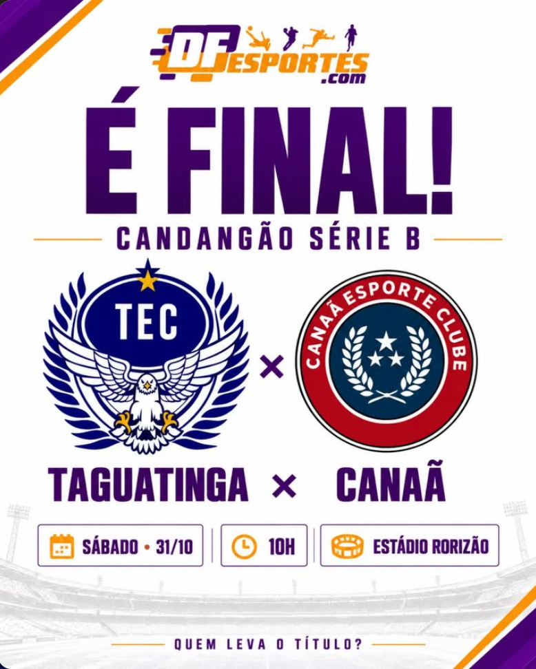
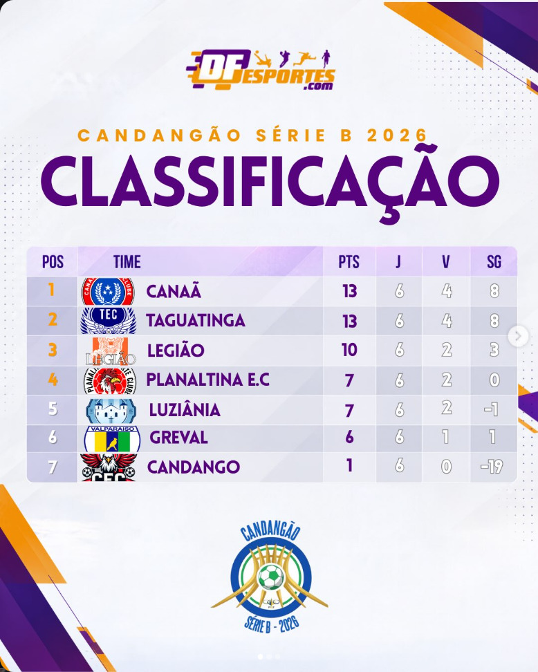

Apuração e redação de reportagens esportivas; cobertura da VNL em Brasília, com entrevistas em português e inglês, inclusive com atletas da seleção brasileira; gestão do Instagram, roteiros e edição de Reels e Stories.
DF Esportes · VNL 2026
Histórias que aproximam o esporte das pessoas.
Estudante de Jornalismo, repórter e produtora de conteúdo digital. Atuo na cobertura esportiva, na realização de entrevistas e na criação de narrativas para redes sociais.
Explorar meu trabalho ↗Ver currículo
Cobertura da Liga das Nações de Vôlei em Brasília, com apuração presencial e entrevistas em português e inglês, incluindo atletas da Seleção Brasileira. Produção de conteúdo para o DF Esportes e seu Instagram.
Instagram do DF Esportes ↗


Entrevistas realizadas durante a cobertura da VNL 2026 para o DF Esportes.
Reportagens sobre vôlei, futebol e outras modalidades, com acesso direto à publicação original.
Planejamento editorial, roteiros, publicações e conteúdo para redes sociais, acompanhando acontecimentos esportivos do Distrito Federal.
Ver perfil ↗Criação de roteiros e narrativas para vídeos promocionais de evento, em colaboração com a equipe de produção.
Ver trabalho original ↗Peças gráficas e conteúdo audiovisual produzidos para as redes sociais do DF Esportes, com foco na comunicação esportiva.







DF Esportes
DF Esportes
Desenvolvimento de uma revista em atividade universitária, acompanhada de três peças de divulgação. Produção editorial e comunicação visual.
Apuração e redação de reportagens esportivas; cobertura da VNL em Brasília, com entrevistas em português e inglês, inclusive com atletas da seleção brasileira; gestão do Instagram, roteiros e edição de Reels e Stories.
Fotografia, edição, composição visual e participação em projetos de comunicação e marketing.
Bacharelado em Jornalismo · ingresso em 2025, em andamento.
Smart Idiomas · conclusão em 2025. Intercâmbio de um mês na Irlanda para estudos da língua inglesa.
Curso de jornalismo esportivo · 2025.
Disponível para oportunidades em jornalismo, comunicação e produção de conteúdo.
Enviar e-mail ↗